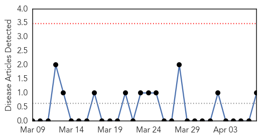

Pertussis
30-Day Web Trend
0 alerts, 0 warnings

30-Day Twitter Trend
0 alerts, 0 warnings

Article Locations

Article Confidences

Top Articles:
Top Tweets:
-
No tweets found for Apr 07, 2014
Unknown
30-Day Web Trend
0 alerts, 0 warnings

30-Day Twitter Trend
0 alerts, 0 warnings

Article Locations


Article Confidences

Top Articles:
- 0.986
- Rare Lassa Fever Case Found in US
- 0.972
- Survey identifies 4 new leprosy cases in Kolhapur, 3 in advanced stage
- 0.917
- Chicago Tribune
- 0.917
- Chicago Tribune
- 0.917
- Chicago Tribune
- 0.917
- Chicago Tribune
- 0.917
- Chicago Tribune
- 0.917
- Chicago Tribune
- 0.917
- Chicago Tribune
- 0.917
- Chicago Tribune
- 0.917
- Chicago Tribune
- 0.917
- Chicago Tribune
- 0.917
- Chicago Tribune
- 0.917
- Chicago Tribune
- 0.910
- The world windows to Thailand
- 0.910
- The world windows to Thailand
- 0.866
- Russia says Ukraine must stop pointing finger at Moscow
- 0.866
- NATO-No significant change in Russian troop positions near Ukraine
- 0.866
- Sub-Saharan Africa GDP seen rising to 5.2 pct in 2014
- 0.861
- Salt Lake City News, Sports, Archive
- 0.861
- Salt Lake City News, Sports, Archive
- 0.810
- China, Japan nervous as PEDv cases climb
- 0.796
- The Rocky Mount Telegram
- 0.775
- HA passenger with pink eye symptoms denied boarding
- 0.763
- Gene mapping used by US scientists to combat food poisoning
- 0.728
- Kuwait gives $250m to aid Syrian relief
- 0.728
- Russian soldier kills Ukrainian naval officer in Crimea
- 0.728
- ‘I’m not going anywhere,’ Russian ex-PM quotes Assad as saying
- 0.728
- Rwandan president blames France at genocide commemorations
- 0.728
- Pro-Russian separatists declare 'independence' for Donetsk
- 0.728
- World oil prices down on Libyan ports agreement
- 0.728
- New possible signals detected from missing plane
- 0.728
- VIDEO: Indian voters call for change
- 0.728
- French organic winemaker fined for refusing to use pesticides
- 0.728
- French, British UN workers shot dead in Somalia
- 0.671
- Infectious XDR-TB patients being sent home - Western Cape
- 0.643
- Bangkok Post
- 0.643
- Bangkok Post
- 0.639
- Bitten by wolf, Satara woman dies of rabies
- 0.626
- UAE Ministry of Education celebrates World Health Day in collaboration with Dettol's 'Mission for Health'
- 0.602
- HSC doctor receives $2 million grant for research on pandemic disease
- 0.600
- Public Health: Start Here is theme for 2014 National Public Health Week
- 0.582
- NMA seeks public enlightenment
- 0.560
- State public health officials issue warning after toxin found in sport-harvested shellfish from Monterey Bay
- 0.555
- Operation Walk Denver Makes Inaugural Trip to Honduras to Perform Free, Life-Changing Procedures on Patients in Need
- 0.535
- Milwaukee Community Journal WISCONSIN'S LARGEST AFRICAN AMERICAN NEWSPAPERCity of Milwaukee Health Department Marks National Public Health Week 2014
- 0.512
- Novant Health Facilities Recognized for Nursing Excellence
- 0.509
- What's ailing Brandon?
Top Tweets:
- 0.648
- Our survey shows that 95 percent of Aussies aged 35-49 have experienced flu-like symptoms yet more than half have never had a flu vaccine.
- 0.510
- The most deadly vector-borne disease malaria caused an estimated 627000 deaths in 2013. WHD2014 WorldHealthDay